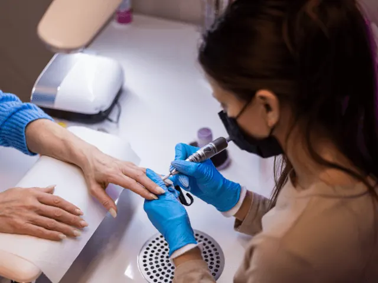
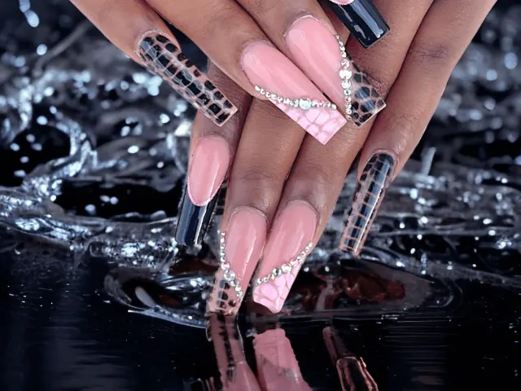

Partnerbijdrage
Ken je deze feiten en fabels al over nagelverzorging?
Gepubliceerd op 11 september 2023, bijgewerkt op 26 februari 2024
Onderdeel van de gids Nagelsalon in Nijmegen
We nemen je in deze blog mee in de wereld van nagelverzorging! Of je nu een nagellakliefhebber bent of gewoon je nagels gezond en sterk wilt houden, het is belangrijk om de feiten van de fabels te scheiden. In dit artikel onthullen we enkele verrassende waarheden en hardnekkige misvattingen over nagelverzorging. En om de blog af te toppen, hebben we enkele goede nagelsalons voor je uitgezocht in Nijmegen!
Nagels groeien sneller wanneer je ze vaker knipt: feit of fabel?
Kunnen we onze nagels sneller laten groeien door ze vaker te knippen? Het klinkt als een handige truc, maar laten we eens kijken of dit echt waar is of gewoon een fabeltje. We duiken in de wetenschap achter nagelgroei en onthullen de waarheid over deze veelgehoorde uitspraak. Spoiler alert: er kan meer achter zitten dan je denkt!
Het geheim achter sterke nagels: voeding of magie?
Wat is het geheime ingrediënt voor sterke, veerkrachtige nagels? Sommigen beweren dat het een magische formule is die alleen toegankelijk is voor de uitverkorenen. Maar laten we eerlijk zijn, magie is misschien niet het antwoord dat we zoeken. Ontdek in deze sectie hoe een gebalanceerd dieet en enkele slimme voedingstips je nagels kunnen transformeren van broos naar glorieus.

Onze voedingstips voor de optimale nagelverzorging:
- Eiwitten: Nagels bestaan uit een eiwit dat keratine heet. Het is dus belangrijk om voldoende eiwitten in je dieet op te nemen om een gezonde nagelgroei te ondersteunen. Goede eiwitbronnen zijn vis, gevogelte, mager vlees, eieren, peulvruchten en noten.
- Biotine: Biotine is een Vitamine die essentieel is voor een gezonde nagelgroei. Sommige studies suggereren dat het nemen van een biotinesupplement kan helpen de dikte van de nagels te verbeteren en broosheid van de nagels te verminderen. Goede voedselbronnen van biotine zijn eieren, amandelen, zoete aardappelen en spinazie.
- Omega-3- vetzuren: Omega-3- vetzuren zijn belangrijk voor het behoud van gezonde nagels, evenals een gezonde huid en haar. Goede bronnen van omega-3 zijn onder meer vette vis zoals zalm, walnoten, chiazaad en lijnzaad.
- IJzer: IJzer is belangrijk voor een gezonde bloedstroom, die essentieel is voor het leveren van zuurstof en voedingsstoffen aan de nagels. Goede bronnen van ijzer zijn rood vlees, gevogelte, zeevruchten, bonen en bladgroenten.
- Vitamine E: Vitamine E is een antioxidant die de nagels helpt beschermen tegen schade. Goede voedselbronnen van vitamine E zijn noten, zaden en plantaardige oliën.
Door deze voedingsstoffen in je dieet op te nemen, kun je helpen een gezonde nagelgroei te bevorderen en nagelproblemen als broosheid, splijten en afbladderen te voorkomen.

Feit of fictie: ademen je nagels ook?
Er heerst soms verwarring over de vraag of nagels kunnen “ademen” of niet. Het is belangrijk om te weten dat nagels eigenlijk geen levend weefsel zijn. De zichtbare nagelplaat bestaat voornamelijk uit dode huidcellen die zijn samengeperst en verhard. Hierdoor kunnen nagels geen zuurstof of voedingsstoffen opnemen zoals levend weefsel dat kan.
Hoewel nagels zelf niet kunnen ademen, kunnen ze wel uitdrogen. Het is daarom belangrijk om regelmatig een voedende nagelriemolie aan te brengen en je nagels en handen goed te hydrateren met handcrème. Dit helpt om de nagels en nagelriemen gezond en gehydrateerd te houden.
Nagelstudio’s Nijmegen: Welke tips hebben we voor jou:
MD Fantasy Nails
Deze nagelstudio in Nijmegen biedt een breed scala aan fantasierijke nagelcreaties en kunstzinnige designs. Met positieve reviews van tevreden klanten en een focus op kwaliteit, zorgen ze voor nagels die je verbeelding prikkelen.
Nagelstudio Saigon
Saigon is dé plek in Nijmegen waar je terecht kunt voor een perfecte manicure en pedicure. Klanten prijzen de vriendelijke service en de nauwkeurige aandacht voor detail. Bij Saigon kun je rekenen op vakmanschap en een ontspannen sfeer.
Sen Nails en Spa
Deze salon in Nijmegen biedt niet alleen hoogwaardige nagelbehandelingen, maar ook ontspannende spa-ervaringen. Met een focus op klanttevredenheid en een rustgevende ambiance, laten ze je genieten van een complete verwennerij voor je nagels en lichaam.
Vynails
Bij Vynails draait alles om het creëren van stijlvolle en eigentijdse nagelontwerpen. Hun professionele team staat bekend om hun precisie en oog voor detail. Met een moderne uitstraling en positieve recensies, biedt Vynails een trendy plek voor nagelverzorging in Nijmegen.
Conclusie
Met deze tips ben je klaar om nagelverzorging te benaderen met een scherp oog voor feiten en een lach op je gezicht. We hebben enkele opmerkelijke feiten onthuld, misvattingen rechtgezet en nagelmythes ontrafeld. Vergeet niet dat goede nagelverzorging essentieel is voor gezonde, mooie nagels. Dus knip ze op de juiste manier, geef ze de voeding die ze nodig hebben en vergeet niet te genieten van de reis naar prachtig verzorgde nagels! Naast dat je deze tips zelf kan toepassen kan je ook naar één van de nagelsalons in Nijmegen gaan om jezelf heerlijk te laten vertroetelen.
OVERZICHT NAGELSALONS
BEKIJKNagelsalons in Nijmegen
Zin om te beginnen? In onze bedrijvengids vind je alle 10 nagelsalons in Nijmegen, met openingstijden, kenmerken en een kaart.
Bekijk alle 10 nagelsalons in Nijmegen
Heb je zelf een nagelsalon? Laat je hier uitlichten.